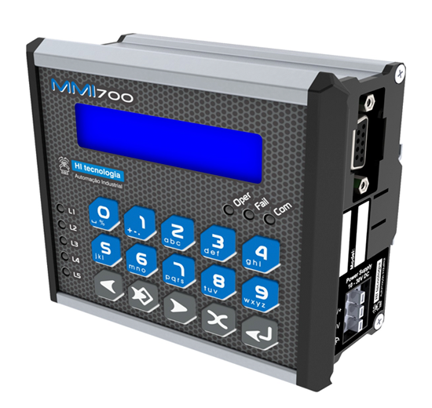

Programação para IHMs Alfanuméricas
As IHMs MMI650, MMI700 e MMI800 são interfaces homem-máquina desenvolvidas e fabricadas pela HI Tecnologia para visualização, monitoramento e controle local de processos industriais. Nessa etapa, você aprenderá o básico conceitual dessas linhas de IHMs alfanuméricas e a utilizá-las no ecossistema de automação. Para o desenvolvimento das telas e lógicas de operação, você utilizará ferramentas de software essenciais como o OPPE e o SPDSW. Não se esqueça de salvar os arquivos das aulas em pastas individuais para cada tema, na sua pasta localizada em: L:\GAdmn\DSuporte Tecnico\Minha Pasta.

Com o CLP ZAP900 ou IHM MMI700, você deve reproduzir o conteúdo apresentado no Vídeo de Treinamento. É essencial documentar as práticas para, ao final, apresentar seus resultados para os colaboradores do departamento.
Faça a atividade sobre telas indexadas. Desta vez, utilize a IHM MMI700 para aplicar os conceitos avançados de estruturação de menus e navegação no projeto.